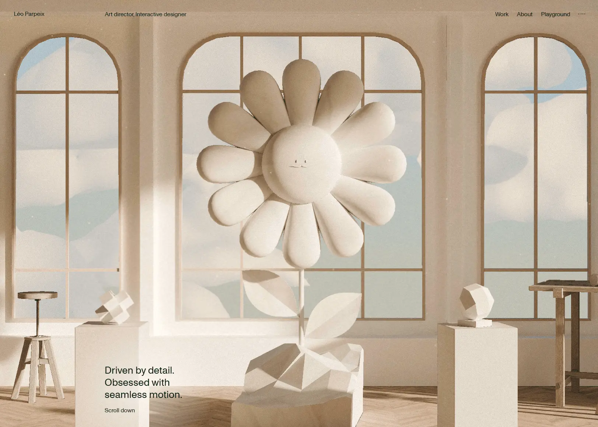

Сайт 017 · Портфолио · Личные сайты и портфолио
Leo Parpeix
19 место в чемпионате · 75.1 / 100
Screens/017.webp, доминирующий цвет занимает 50% кадра.Что это
Персональное портфолио Лео Парпе — французского арт-директора и interactive-дизайнера. Вопреки ожиданию это не конструктор, а вручную собранное приложение на Vue 3 с Vite, размещённое на Vercel: контент целиком зашит в скрипт, CMS нет, а мета-теги подставляются на клиенте по маршруту. Главная построена вокруг WebGL-сцены на three.js — загруженные glTF-модели комнаты, ромашки, пчелы и фруктов, собственные шейдеры, рейкаст-ховер с экспоненциальным сглаживанием, steering-AI на Yuka и физика падения; поверх работают GSAP со ScrollTrigger и плавный скролл Lenis.
Описание владельца коллекции: Современное портфолио арт-директора из Франции, украшенное сложным трёхмерным ховер-эффектом.
Чем интересен
- Трёхмерный ховер — настоящий WebGL, а не CSS и не видео: объект ловится рейкастером на плоскости, а целевая группа экспоненциально подтягивается к курсору — отсюда ощущение тяжёлого плавного следования за мышью.
- Поверх рендера работает поведенческий ИИ: на библиотеке Yuka собраны преследователь и убегающий, и пчела гоняется за целью не по заготовленной анимации, а вычисляя движение каждый кадр.
- Сцена разделена на два полотна: фоновое на дальнем плане и верхнее поверх HTML с отключёнными указателями — так 3D-объекты проходят над текстом, оставаясь некликабельными.
- Тема меняется по маршруту прямо в подложке: главная почти белая, страница о себе тёмно-зелёная, детская — жёлтая, при этом цвет в мета-теге всегда один и тот же.
- Кастомный курсор несёт смысл: подпись меняется по контексту, адрес почты копируется в буфер с подтверждением, а звук включается только после явного клика.
- При этом техническая гигиена хромает: файлов robots и sitemap нет — сервер отдаёт на эти адреса то же приложение, а несуществующие страницы отвечают кодом 200 с надписью «Page not found» уже на клиенте.
Все 30 номинаций сайта
Итог: 75.1 / 100 по профилю «Портфолио и агентство». Первых мест в критериях: 6 (единолично 0, разделено 6), призовых мест: 8. Строки отсортированы по месту в номинации, ссылка ведёт к номинации в чемпионате.
- Мультимедийность
- Интерактивные элементы
- Креативность в решении задач
- Соответствие бренду и ЦА
- Целостность
- Читабельность
- Экспертность
- Попадание в номинацию
- Эстетика и оригинальность
- Уникальность предложения
- Удобство интерфейса
- Соответствие заявленному
- Современные технологии
- Инновационность в дизайне
- Уникальность и экспертность
- Грамотность
- Социальная ответственность
- Адаптивность
- Отзывы и рейтинги
- Актуальность
- Релевантность и полнота
- Безопасность
- Полнота реализации
- Доступность (a11y)
- Интеграции
- SEO-оптимизация
- Стабильность
- Интуитивность навигации
- Работа форм и поиска
- Прозрачность
Обоснования по разделам
- Юзабилити и UX
- Разделы Work, About и Playground переключаются мгновенно через vue-router, скролл смягчён Lenis, а кастомный курсор подписывает, что сейчас произойдёт; за это приходится платить прелоадером поверх первой отрисовки, любым несуществующим адресом с ответом 200 и трёхмерной сценой, до которой не добраться с клавиатуры.
- Дизайн и визуальное восприятие
- Бежевая «музейная» комната с арочными окнами и лепниной, в центре — матовая ромашка с минималистичным лицом; рендер мягкий, ближе к керамике, чем к глянцевому CGI, а поверх лежит плотная чёрная типографика на Monument Grotesk и вариативном Avantt. Ни один раздел не выглядит чужим: подложка меняет цвет по маршруту — светлая на главной, зелёная в About, жёлтая в Playground.
- Контент
- Избранные проекты с годами, архив примерно из двадцати работ с видео-превью, шоурил и хронология опыта с 2020 года; названы клиенты — PSG, Dior, Cartier, Air France, Tour de France — и агентства. Текста при этом мало: сайт показывает работы, а не рассказывает о них, и ни цен, ни процесса здесь не найти.
- Техническое качество
- Собрано руками на Vite и Vue 3 и размещено на Vercel, медиа раздаёт Cloudflare, есть HSTS и аналитика Vercel; но robots.txt и sitemap.xml отдают тот же шелл вместо файлов, микроразметки нет, мета-теги подставляются на клиенте, а учебный поддомен Lab из навигации не открывается.
- Функциональность и интерактивность
- Работают копирование почты в буфер, ссылки на Instagram и LinkedIn, видео-превью при наведении и звук на Howler — но только после явного клика; форм обратной связи, подписки и поиска по сайту нет вовсе.
- Доверие и репутация
- Автор назван поимённо, опыт датирован, клиенты перечислены, а в благодарностях указаны соавторы фронтенда; при этом юридического раздела, политики конфиденциальности и cookie-баннера нет, год в подвале подставляет скрипт, а в разметке для соцсетей указан чужой хэндл.
- Инновации и технологичность
- Редкий уровень инженерии: два слоя WebGL — фон и передний план поверх HTML — почти сто собственных шейдеров, ховер через THREE.Raycaster с экспоненциальным сглаживанием, steering-AI на Yuka, заставляющий 3D-пчелу гоняться за целью, и физика падения с гравитацией.
- Соответствие категории и целям
- Портфолио interactive-дизайнера делает ровно то, что должно: показывает уровень и характер за первые секунды; не хватает только практической части — юридической, поисковой и текстовой.
Что не проверено
- Год указан по строке копирайта в данных сайта (2024): на самой странице год подставляет скрипт, а в архиве работ есть проект с датой 2026, поэтому дата запуска по разметке не определяется.
- Отрендеренный DOM снят только до стадии прелоадера: остальные секции подтверждены кодом и классами, но не полным снимком.
- Палитра взята из CSS-деклараций, вычисленные стили не снимались.
- Мета-описание подменяется на клиенте: в отдаваемом HTML одна формулировка, после загрузки скриптов другая; в записи указана статическая версия.
- Доступность поддомена Lab не определена: соединение из среды проверки не устанавливалось, это ограничение сети, а не подтверждение недоступности.
- Политика конфиденциальности и cookie-баннер проверены только по разметке и коду — реальное поведение для посетителя из ЕС не тестировалось.
- Содержимое каталога медиа перечислить не удалось: листинг закрыт.
- Начертания и лицензии шрифтов не проверялись, оси вариативного шрифта не измерялись.
- Мобильное поведение и переполнение на узких ширинах не измерялись.
- Соответствие скриншота 017.webp текущему состоянию сайта не проверялось, дата снимка неизвестна.
Паспорт
- Домен
- leoparpeix.com
- Тип сайта
- Портфолио
- Категории
- Личные сайты и портфолио
- Подкатегории
- Дизайнер
- Для кого
- Дизайнерам, Разработчикам, Агентствам
- Стиль
- Иммерсивный 3D, Минимализм, Редакционный
- Приёмы
- WebGL и 3D, Кастомный курсор, Звук, Скроллителлинг, Прелоадер
- Технологии
- Vue 3 со сборкой Vite, vue-router, three.js, GLTFLoader с Draco и KTX2, GSAP 3.14.1 со ScrollTrigger, Lenis, Yuka (поведенческий ИИ), Howler.js (звук), Vercel и Cloudflare, Видео и шрифты
- Язык
- Английский
- Страна
- Франция — в описании прямо сказано «French Art Director»; сайт англоязычный, города в разметке нет
- Автор
- Лео Парпе (Léo Parpeix), арт-директор и interactive-дизайнер; в благодарностях указаны соавторы фронтенда
- Год
- 2024
- Добавлен
- 2026-10-01
Палитра
- #D8D1C5 — 50% кадра
- #B39B83 — 31% кадра
- #8F7659 — 10% кадра
- #F4EDE4 — 5% кадра
- #C9B8A5 — 2% кадра
измерено из Screens/017.webp (тёплый бежевый занимает 50% кадра, песочный 31%); токены сайта: фон главной #F7F7F7, тёмно-зелёный #022016, тема About #083D2A, тема Playground #F6E016
- Режим
- Светлая
- Цвет фона
- Нейтральный
Чемпионат
19 место из 31 · 75.1 / 100 · первых мест 6 из 30 · сильнее всего: Мультимедийность (1 место)
- Соответствие бренду и ЦА — 1 место, 9 баллов
- Читабельность — 1 место, 8 баллов
- Целостность — 1 место, 9 баллов
- Мультимедийность — 1 место, 10 баллов
- Интерактивные элементы — 1 место, 10 баллов
- Креативность в решении задач — 1 место, 10 баллов
Технические факты
- HTTPS
- да
- Meta viewport
- да
- Title
- Léo Parpeix — Art Director & Interactive Designer (49 симв.)
- Description
- French Art Director & Interactive Designer. I create impactful websites using a mix of typography, clean, layouts, animation and 3D elements. (141 симв.)
- Open Graph
- да
- Структурированные данные
- нет
- Sitemap
- нет: /sitemap.xml отдаёт тот же каркас приложения, карты сайта нет
- Robots
- нет: /robots.txt отдаёт тот же каркас приложения
- Аналитика
- Vercel Web Analytics 2.0.1
- Проверено ссылок
- 15
- Битые ссылки
- /robots.txt и /sitemap.xml отдают каркас приложения вместо файлов
несуществующие адреса отвечают кодом 200: страница ошибки рисуется на клиенте - Контакты
- lparpeix@gmail.com с копированием в буфер по клику, Instagram и LinkedIn; в шапке ссылка на отдельный поддомен Lab
- Юридическая информация
- юридического раздела нет: ни политики, ни cookie-баннера, ни реквизитов; в данных подвала копирайт 2024 года, а на странице год подставляется скриптом
Технологии с доказательствами
- Vue 3 со сборкой Vite — meta generator «Vite + Vue 3», контейнер div с data-v-app, scoped-атрибуты data-v-*, хешированные ассеты /assets/index-*.js
- vue-router — баннер версии 4.1.6 в бандле и таблица маршрутов: главная, /about, /playground и catch-all
- three.js — баннер Three.js, WebGLRenderer, ShaderMaterial, Raycaster; в бандле 97 вершинных и 97 фрагментных шейдеров
- GLTFLoader с Draco и KTX2 — классы загрузчиков и модели scene_v9.glb, flower_v2.glb, bee_v4.glb, orange.glb, raisin.glb
- GSAP 3.14.1 со ScrollTrigger — баннеры GSAP 3.14.1 и ScrollTrigger 3.14.1, registerPlugin, инлайновые трансформации в DOM
- Lenis — классы lenis, lenis-smooth и lenis-stopped прямо на элементе html
- Yuka (поведенческий ИИ) — API EntityManager, Vehicle, PursuitBehavior, SeekBehavior и флаг преследования для пчелы
- Howler.js (звук) — 49 совпадений howler, AudioContext и надпись «Click to enable sound» — звук включается только по клику
- Vercel и Cloudflare — заголовки Server: Vercel и X-Vercel-Cache; медиа отдаётся с cdn.leoparpeix.com за Cloudflare
- Видео и шрифты — 22 файла mp4 и 9 webm в бандле, шоурил в теге video; локальные Monument Grotesk Regular и Avantt Variable с preload
Что смотреть в первую очередь
Смотреть как пример настоящего 3D-ховера: объект ловится рейкастером и следует за курсором с экспоненциальным сглаживанием, а фон и передний слой — два отдельных WebGL-полотна вокруг обычной HTML-вёрстки.
Похожие в коллекции
- Sutéra — общее: Личные сайты и портфолио, Минимализм, Редакционный, WebGL и 3D, Скроллителлинг, Кастомный курсор, Прелоадер
- Ironhill — общее: Редакционный, Скроллителлинг, WebGL и 3D, Кастомный курсор, Прелоадер
- Aevion — общее: Минимализм, Иммерсивный 3D, WebGL и 3D, Скроллителлинг, Прелоадер
- WeekSync — общее: Минимализм, Скроллителлинг, Кастомный курсор, Звук